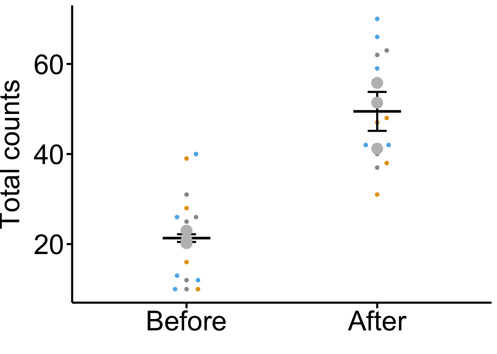

### Load packages
pacman::p_load(ggplot2, dplyr, ggpubr, ggbeeswarm, readxl, rstatix, here)
### Import dataset
dataset <- read_excel(here("learn", "Superplots_R_script", "data.xlsx"))
## Defines a colorblind-friendly palette
cbPalette <- c("#999999", "#E69F00", "#56B4E9", "#009E73", "#F0E442", "#0072B2", "#D55E00", "#CC79A7")
## Order the variables on x-axis
dataset$variable <- factor(dataset$variable, levels = c("Before", "After"))
## Calculate averages of each replicate
replicate_mean <- dataset |> group_by(variable, replicate) |>
summarise_at(vars(value), mean, na.rm = TRUE) |>
ungroup()
### view the data
replicate_mean
## # A tibble: 6 × 3
## variable replicate value
## <fct> <dbl> <dbl>
## 1 Before 1 20.8
## 2 Before 2 23
## 3 Before 3 20.2
## 4 After 1 51.4
## 5 After 2 41.2
## 6 After 3 55.8
## Perform t-test of variable 1 and 2
# t_test <- t.test(
# x = replicate_mean$value[1:3],
# y = replicate_mean$value[4:6],
# alternative = "two.sided",
# var.equal = TRUE
# )
### Retrieve the p-value for the t-test of variable 1 and 2
# pvalue <- t_test["p.value"]
pvalue <- replicate_mean |>
t_test(value ~ variable) |>
add_significance(p.col = "p")
## Calculate total average
total_mean <- replicate_mean |>
group_by(variable) |>
summarise_at(vars(value), mean, na.rm = TRUE)The code is adapted from here
## Plots Superplot based on biological repicate averags
ggplot(dataset, aes(x = variable, y = value, color = factor(replicate))) +
### Add individual data points
geom_beeswarm(cex = 3) +
#### "cex" can be used to spread the data points if the averages are close together
### Add mean values as bars
stat_summary(data = total_mean, fun = mean, fun.min = mean,
fun.max = mean, geom = "crossbar", width = 0.25, color = "black") +
### Add error bars
stat_summary(data = replicate_mean, fun.data = mean_se,
geom = "errorbar", width = 0.1, color = "black", linewidth = 1) +
### Add color palette
scale_color_manual(values = cbPalette) +
### Add replicate averages as points
geom_beeswarm(data = replicate_mean, size = 5, color = "gray") +
### Add pvalue
# stat_pvalue_manual(
# pvalue, y.postion = 80, step.increase = 0.1,
# label = "p = {p.signif}"
# ) +
### Cosmetics and labeling
labs(x = "", y = "Total counts") +
theme_bw() +
theme(
axis.line = element_line(size = 1, colour = "black"),
legend.position = "none",
axis.title.y = element_text(family="Arial", size=28, color = "black", vjust = 2),
axis.text = element_text(family="Arial", size = 28, color = "black"),
axis.ticks = element_line(size = 1, color = "black"),
axis.ticks.length = unit(2, "mm"),
panel.grid.major = element_blank(),
panel.grid.minor = element_blank(),
panel.background = element_blank(),
panel.border = element_blank()
)